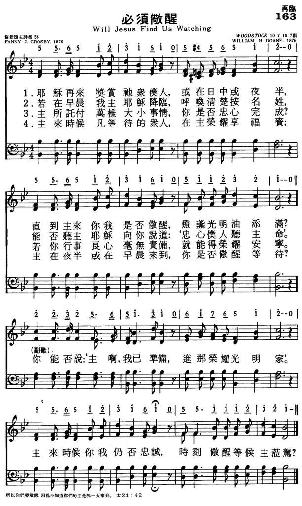

|
|
|
|
1 When Jesus comes to reward His servants, Refrain: 2 If, at the dawn of the early morning, 3 Have we been true to the trust He left us? 4 Blessed are those whom the Lord finds watching, |
163必须儆醒
1.耶稣再来奖赏他众仆人，或在日中或夜半，
直到主来你我是否儆醒，灯盏光明油添满？ 你能否说：‘主啊我已预备，进那荣耀光明家’ 主来时候你我仍否忠诚，时刻儆醒等候主莅驾？ 2.若在早晨我主耶稣降临，呼唤清楚按名姓， 能否听主耶稣向你说道：‘忠心仆人听主命’ 你能否说：‘主啊我已预备，进那荣耀光明家’ 主来时候你我仍否忠诚，时刻儆醒等候主莅驾？ 3.主所托付万样大小事情，你是否忠心完成？ 若你行事良心毫无责备，就能得荣耀安宁。 你能否说：‘主啊我已预备，进那荣耀光明家’ 主来时候你我仍否忠诚，时刻儆醒等候主莅驾？ 4.主来时候凡等待的众人，在主荣耀享福贵； 主在夜半或在早晨来到，你是否儆醒等待？ 你能否说：‘主啊我已预备，进那荣耀光明家’ 主来时候你我仍否忠诚，时刻儆醒等候主莅驾？ |
|
https://www.mred365.cn/szxg/7166.html
 https://hymnary.org/hymn/WASH1957/page/74
|
|
|
|
|

-

119必须儆醒歌（简谱版）新编赞美诗400首 https://youtu.be/1sTaRad2S-k -
https://youtu.be/uNHoQL2YOd0
LX1547
Will Jesus Find Us
Watching
163必须儆醒
| Text: | Will Jesus Find Us Watching? 會否祂來正逄我們儆醒 |
| Author: | Fanny J. Crosby, 1820-1915 |
| Tune: | [When Jesus comes to reward His servants] |
| Composer: | William H. Doane, 1832-1915 |

Tune Information
| Title: | [When Jesus comes to reward His servants] |
| Composer: | W. Howard Doane |
| Meter: | 10.7.10.7 with refrain |
| Incipit: | 55651 23161 54565 |
| Key: | B♭ Major |
| Copyright: | Public Domain |

简介（一） （来源：《赞美诗新编史话》）
必须儆醒歌 Will Jesus Find Us Watching
《赞美诗新编史话》
经文：“所以，你们要儆醒，因为不知道你们的主是哪一天来到”(太24：42)。
这是伟大多产的女诗人克罗斯比 (事略参阅第 ll首)根据马太福音第24章第42节的经训“所以，你们要儆醒，因为不知道你们的主是哪一天来到”所写的圣诗，劝人时刻准备欢喜等候主，迎接主再来。儆醒决不是消极等待，而是要像这首诗里所说的要“灯盏明亮油满添”。第三节尤其值得我们反省深思：
主所托付各样大小事情，我们是否尽忠心，
若我作工存着无亏良心，就能享永久安宁。
正因为我们不知道主是哪一天来到，所以更要时刻准备，有好行为，有内在的油，使灯不至熄灭。这对于有些空喊“耶稣快再来了。我们要到旷野或什么山去迎接他”而什么工都不作的人，是一个严重的警告；对我们众信徒也是一个极大的鞭策 !
这首诗的曲调名叫《WOODSTOCK》，是与歌词作者克罗斯比长期合作的音乐伴侣多恩 (事略参阅第 11首，见第3首注①)所谱。
https://www.xueshengshi.com/?p=6405
Will Jesus Find Us Watching?
Words: Frances Jane (Fanny) Crosby (b. Mar. 24, 1820; d. Feb. 12, 1915)
Music: William Howard Doane (b. Feb. 3, 1832; d. Dec. 23, 1915)
Links:
Wordwise Hymns
The Cyber Hymnal
Hymnary.org
Note: This gospel song was published in 1876. To read some things of interest
about Fanny Crosby that you may not have known, check out the Wordwise Hymns
link.
Prophecy is a fascinating subject. We’d all like to know what’s going to happen
tomorrow, and there are countless would-be prophets ready to tell us–sometimes
for a price. They may prove to be good guessers but, more often than not,
they’re wrong.
Bible prophecy is in a class by itself, in that regard. Early on, the Lord told
His people how to identify a false prophet. If what he prophesied did not come
to pass, then they could be assured that he was not speaking for God (Deut.
18:20-22). Or if the prophet’s message contradicted truth already revealed by
God, or if he promoted some false god, he must be rejected (Deut. 13:1-5). God’s
Word is always accurate, and consistent with itself.
One of the most frequent prophetic themes in the Bible is the second coming of
the Lord Jesus Christ. Jesus Himself promised that. “I will come again,” He said
(Jn. 14:3). Then, at His ascension into heaven, angel messengers reiterated the
promise: “This same Jesus, who was taken up from you into heaven, will so come
in like manner as you saw Him go into heaven” (Acts 1:11). Christians are
“looking for the blessed hope and glorious appearing of our great God and
Saviour Jesus Christ” (Tit. 2:11).
But when will this happen? The Bible is silent there. The answer is, in blunt
terms, that the precise timing is none of our business. We are to leave the
matter with an all-wise God. Jesus said:
“It is not for you to know times or seasons which the Father has put in His own
authority” (Acts 1:7). “Of that day and hour no one knows, not even the angels
of heaven, but My Father only” (Matt. 24:36). “You know neither the day nor the
hour in which the Son of Man is coming” (Matt. 25:13).
It is passing strange, therefore, that over the centuries dozens and dozens of
prognosticators have ignored these clear statements, claiming they know the date
of Christ’s return. They have all been wrong! One guess that has surfaced
recently concerns the “blood moon” (a lunar eclipse, when the moon takes on a
reddish hue).
In several places the Bible speaks of a coming time of great judgment, when the
moon will “become like blood” (Rev. 6:12)–perhaps from pollution in those days
of terrible judgment. It is questionable whether that is the same thing as what
current theorists mean, but some adherents of the theory assure us they can
prove from it that the Lord will return on a specific day in September of 2015
(in fact, the very day this article is posted!). But that’s reading a lot into
Scripture about something God has pointedly kept to Himself.
There is another question to be asked–one of more practical importance than,
“When?” That is, “So what?” What does the certainty of His return mean to my
goals and conduct today? Since we know, on the basis of the Word of the living
God, that the Lord Jesus Christ is coming back again, we need to follow that
with a consideration of what we should be doing in the meantime.
The Bible is certainly not silent on that subject. Holy living and faithful
service for Christ, not fruitless date-setting, are to be our response to the
promise of His coming. The Word of God says, “Everyone who has this hope in Him
purifies himself, just as He is pure” (I Jn. 3:3). “You turned to God from idols
to serve the living and true God, and to wait for His Son from heaven” (I Thess.
1:9-10).
In 1876, a couple of years after another flurry of end-time predictions (none of
which came to pass), Fanny Crosby published the present song that puts these
things in perspective.
CH-1) When Jesus comes to reward His servants,
Whether it be noon or night,
Faithful to Him will He find us watching,
With our lamps all trimmed and bright?
O can we say we are ready, brother?
Ready for the soul’s bright home?
Say, will He find you and me still watching,
Waiting, waiting when the Lord shall come?
CH-3) Have we been true to the trust He left us?
Do we seek to do our best?
If in our hearts there is naught condemns us,
We shall have a glorious rest.
CH-4) Blessèd are those whom the Lord finds watching,
In His glory they shall share;
If He shall come at the dawn or midnight,
Will He find us watching there?
Questions:
1) How should the Lord’s promise to come again affect our attitudes, conduct,
and Christian service?
2) What would you like to be doing at the moment of Christ’s return? (And not be
doing?)
Links:
Wordwise Hymns
The Cyber Hymnal
Hymnary.org
https://wordwisehymns.com/2015/09/28/will-jesus-find-us-watching/
"WILL JESUS FIND US WATCHING?"
"Blessed are those…whom the Lord when He cometh shall find watching…" (Lk.
12.37)
INTRO.:
A song which encourage us to watch for the coming of the Lord is "Will Jesus Find Us Watching?" (#320 in Hymns for Worship Revised and #637 in Sacred Selections for the Church). The text was written by Frances Jane Van Alstyne, better known by her maiden and professional name, Fanny J. Crosby (1820-1915). The tune (Woodstock) was composed by William Howard Doane (1832-1915). The song was first published in an 1876 collection entitled Gospel Music.
It has been in most, though not all, hymnbooks published by members of the Lord’s church for use among churches of Christ in the middle and late twentieth century. It appeared in the 1921 Great Songs of the Church (No. 1) and the 1937 Great Songs of the Church No. 2 both edited by E. L. Jorgenson; the 1935 Christian Hymns (No. 1), the 1948 Christian Hymns No. 2, and the 1966 Christian Hymns No. 3 all edited by L. O. Sanderson; the 1963 Abiding Hymns edited by R. C. Welch; and the 1963 Christian Hymnal edited by J. N. Slater. It is found today in the 1971 Songs of the Church edited by A. H. Howard; the 1978/1983 (Church) Gospel Songs and Hymns edited by V. E. Howard; and the 1992 Praise for the Lord edited by J. P. Wiegand; in addition to Hymns for Worship, Sacred Selections, and the 2007 Sacred Songs of the Church edited by William D. Jefferson.
The song emphasizes our need to be prepared for the coming of the Lord.
I. Stanza 1 refers to the fact of His coming.
"When Jesus comes to reward His servants, Whether it be noon or night,
Faithful to Him will He find us watching, With our lamps all trimmed and
bright?"
A. The fact is that Jesus will come to reward His servants: Matt. 16.27
B. As His servants, we need to be faithful to Him: Matt. 24.45
C. Like the wise virgins, we need to keep our lamps all trimmed and bright:
Matt. 25.1-10
II. Stanza 2 refers to the result of His coming
"If at the dawn of the early morning, He shall call us one by one,
When to the Lord we restore our talents, Will He answer thee, ‘Well done’?"
A. When Jesus comes, He will call us to come forth from the grave: Jn. 5.28-29
B. At that time, there will be a judgment where we shall restore to the Lord
our talents: Matt. 25.14-18
C. If we watch and prepare, He will say to us, "Well done": Matt. 25.19-23
III. Stanza 3 refers to the preparation for His coming
"Have we been true to the trust He left us? Do we seek to do our best?
If in our hearts there is naught condemns us, We shall have a glorious rest."
A. We prepare for His coming by being true to the trust that He left us and
doing our best as stewards: 1 Cor. 4.2, 1 Pet. 4.10
B. It should be our aim in our stewardship that there is naught in our hearts
to condemn us. Ellis J. Crum in Sacred
Selections changed this line to read "If in our LIVES there is
naught condemns us," but the idea of our heart condemning or not condemning us
is certainly a scriptural idea: 1 Jn. 3.20-21
C. If we prepare well and are faithful to Him, we shall have a glorious rest:
Heb. 4.9-10
IV. Stanza 4 refers to the time of His coming
"Blessed are those whom the Lord finds watching, In His glory they shall share;
If He shall come at the dawn or midnight, Will He find us watching there?"
A. We do not know when the Lord is coming; therefore, we should be watching at
all times: Matt. 24.36-44
B. Only those who watch and are prepared will share in His glory: Matt.
25.31-34
C. Since we do not know whether the Lord will come at dawn or midnight, we must
watch: Matt. 25.13
CONCL.:
The chorus reminds us of the need to watch and be ready:
"O can we say we are ready, brother? Ready for the soul’s bright home?
Say, will He find you and me still watching, Waiting, waiting when the Lord
shall come?"
Miss Crosby used words and phrases from many different statements made by our
Lord and other writers of the New Testament about the second coming of Christ to
exhort all of us to ask ourselves the question, "Will Jesus Find Us Watching?"
https://hymnstudiesblog.wordpress.com/2008/12/05/quotwill-jesus-find-us-watchingquot/